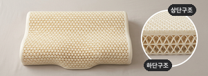
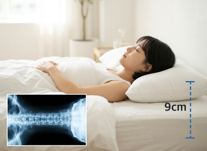
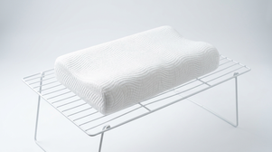

머리는 차갑게, 발은 따뜻하게 해야
숙면에 도움이 된다는 ‘두한족열’ 충족
2중 통기성 구조가 머리 체열을
효과적으로 방출해 깊은 잠에 들게 해요.
TEST· 머리 온도 비교실험
REASON 03 .
한국인에 맞춘 9cm 높이
어깨 말림 없이 푹 잘 수 있어요.

낮은 베개를 사용하면 어깨가 말리면서
불편함 개선에 전혀 도움이 되지 않아요.
그래서 저희는 어깨 말림이 없는
최적의 베개 높이 9cm로 설계했어요.
REASON 04 .
쉽고 간편한 통세척
통세척으로 위생적인 관리가 가능해요.

피부에 매일 닿는 베개,
세탁이 어렵거나 모양 변형이 우려되셨나요?
이제는 매일 걱정 없이 샤워기로
쉽게 세척하고 건조만 시켜주세요.
REASON 05 .